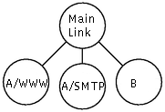
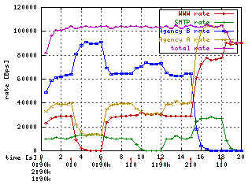

- Örnek 2.1. Sorunumuz:
- A ve B diye iki müşterimiz olsun, her ikisi de ağa eth0 üzerinden bağlanıyor olsun. B'ye 60 kbps, A'ya 40 kbps ayırmak istiyor olalım. Ayrıca, A'nın band genişliğinin 30 kbps'sini WWW için, 10 kbps'sini de kalan herşey için kullanılmak üzere bölmek istiyor olalım. Kullanılmayan band genişlikleri de ihtiyaç olduğunda sınıflar (alt bağlantılar) tarafından (paylarına göre) kullanılsın istiyoruz.
HTB, her sınıfa, o sınıfa atanmış olan miktarı, talep olduğunda, asgari miktar olarak garanti eder. Bir sınıf kendine adanmış miktardan daha azını isterse, kalan band genişliği hizmet isteyen diğer sınıflara dağıtılır.Ayrıca, HTB teorisi ile ilgili belgeye de bakınız; yukarıdaki görevi daha ayrıntılı açıklar.
"borrowing" hakkında Literatürde buna (band genişliğinde fazlalığın ihtiyacı olana verilmesi) "borrowing" (borçlanma/borçlandırma) deniyormuş. Bence "yardımlaşma" amaca daha uygun; çünkü, planlı bir geri ödeme durumu sözkonusu değil. Yazar da bunu belirtmiş ama bir terim önermeyip literatüre bağlı kalmış. Bizim literatür yeni oluştuğu için biz en uygun terimi seçebiliriz.Trafiğin yukarıdaki farklı çeşitleri HTB'de sınıflarla ifade edilir. En basit yaklaşım resimle göstermektir. Gelin, kullanılacak komutlara bakalım:tc qdisc add dev eth0 root handle 1: htb default 12
Bu komut, HTB kuyruklama düzenini eth0 ile ilişkilendirir ve ona bir belirteç (handle), 1: atar. Bu sadece gerektiğinde ona başvururken kullanılacak bir isimdir. default 12 ise başka türlü sınıflanmamış her türlü trafiğin 1:12 sınıfına ait olacağını belirtir.Not Genelde (sadece HTB için değil, tc'deki tüm kuyruklama düzenleri ve sınıfları için), belirteçler x:y biçiminde yazılırlar; burada x bir kuyruklama düzenini[81] tanımlayan bir tamsayı, y ise bu kuyruklama düzeninin üyesi olan bir sınıfı tanımlayan bir tamsayıdır. Kuyruklama düzeninin kendisini belirten belirtecin y değeri sıfır olmalı, bir sınıfı belirten belirtecin ki ise sıfırdan farklı bir sayı olmalıdır. Yukarıdaki 1:, 1:0 olarak ele alınır.tc class add dev eth0 parent 1: classid 1:1 htb rate 100kbps ceil 100kbps tc class add dev eth0 parent 1:1 classid 1:10 htb rate 30kbps ceil 100kbps tc class add dev eth0 parent 1:1 classid 1:11 htb rate 10kbps ceil 100kbps tc class add dev eth0 parent 1:1 classid 1:12 htb rate 60kbps ceil 100kbps
İlk satır 1: kuyruklama düzeni altında bir kök ("root") sınıf, 1:1 sınıfını oluşturur. Bir kök sınıfın tanımı, atası gibi tek başına bir HTB kuyruklama düzeni olmaktır. Bir kök sınıf, HTB kuyruklama düzeninin altındaki diğer sınıflar gibi kendi çocuklarının aralarında yardımlaşmasına izin verir, fakat bir kök sınıf kendi seviyesindeki bir başka sınıfla yardımlaşamaz. Biz diğer üç sınıfı doğrudan HTB düzeni altında oluşturmuştuk, ancak birinin band genişliğindeki bir fazlalığın bir diğerine yararı olmayacaktı. Halbuki biz yardımlaşma olsun istiyorduk. Bu durumda, kök sınıf olarak hizmet verecek ek bir sınıf oluşturup, gerçek veriyi taşıyacak sınıfları bunun altına koymalıydık. Bunlar son üç satırda tanımlanmışlardır. ceil parametresi aşağıda açıklanacaktır.Not Bazan bana soruyorlar, "dev eth0 neden sürekli tekrarlanıyor, zaten handle veya parent kullanılıyor." diye. Bunun sebebi belirteçlerin arabirime özgü olmaları, yani, eth0 ve eth1'in her ikisi de kendi 1:1 sınıfına sahip olabilir.Ayrıca, hangi paketlerin hangi sınıflara ait olacaklarını da tanımlamalıyız. Bu gerçekte HTB düzeni ile ilgili değildir. Ayrıntılar için tc filter belgesine bakınız. Komutlar şöyle görünecektir:tc filter add dev eth0 protocol ip parent 1:0 prio 1 u32 \ match ip src 1.2.3.4 match ip dport 80 0xffff flowid 1:10 tc filter add dev eth0 protocol ip parent 1:0 prio 1 u32 \ match ip src 1.2.3.4 flowid 1:11
( A'yı burada IP adresine göre tanımladık; IP adresinin 1.2.3.4 olduğunu varsaydık.)Not U32 sınıflayıcının belgelenmemiş bir tasarım hatası var; U32 sınıflayıcıları farklı prio (öncelik) değerleri ile kullandığınızda "tc filter show" yinelenmiş girdiler listelenmesine sebep oluyor.1:12 sınıfı için bir filtre oluşturmadığımızı söyleyebilirsiniz. Bir filtre oluştursaydık herşey belirginleşirdi belki ama o zaman default kullanımını gösteremezdik. Yukarıdaki iki kural tarafından sınıflanmamış her paket (kaynak adresi 1.2.3.4 olmayan her paket) 1:12 sınıfına konulacaktır.Artık, kuyruklama düzenlerini istediğimiz gibi uç sınıflarla ilişkilendirebiliriz. Eğer hiçbirşey belirtilmemişse pfifo öntanımlıdır.tc qdisc add dev eth0 parent 1:10 handle 20: pfifo limit 5 tc qdisc add dev eth0 parent 1:11 handle 30: pfifo limit 5 tc qdisc add dev eth0 parent 1:12 handle 40: sfq perturb 10
İhtiyaç duyduğumuz tüm komutlar bu kadar. Paketleri 90 kbps hızda her sınıfa gönderirsek ve her seferinde bir sınıfın paketlerini göndermeyi durdurursak, ne olur görelim. Çizgenin altında dizilmiş olan "0:90k" benzeri yaftaları görmüşsünüzdür. Yaftaların orta noktaları (9'un yanında, ayrıca kırmızı 1 ile imlenmiş olarak) sınıfın trafik hızının değiştiği zamanları işaret eder. Bu yaftalarda ikinokta iminin solunda kalan sayı sınıfı (1:10 sınıfı için 0, 1:11 sınıfı için 1, 1:12 sınıfı için 2), sağındaki sayı ise yaftanın işaret ettiği zamanda başlatılan trafiğin hızını gösterir. Örneğin, 0 sınıfının hızı 0. zaman noktasında 90k, 3. zaman noktasında 0k ve 6. zaman noktasında tekrar 90k yapılmaktadır.
İlk olarak tüm sınıflar 90kb üretmektedir. Bu belirtilmiş hızların her birinden büyük olduğundan her sınıf kendi hızını ayarlandığı hızla sınırlar. 3. zaman noktasında 0 sınıfının paketlerini göndermeyi durdurduğumuzda, 0 sınıfı için ayrılan hız diğer iki sınıfa hız oranları nispetinde paylaştırılır; 1 sınıfına 1 pay, 2 sınıfına 6 pay. (1 sınıfındaki hız değişikliğini çizgede görmek zordur, çünkü hızı sadece 4kbps'tir.) Aynı şekilde, 9. zaman noktasında 1 sınıfının trafiği durdurulmakta ve onun band genişliği diğer iki sınıfa pay edilmektedir. (Bu kez de, 0 sınıfındaki artışı gözlemlemek zor olacaktır.) 15. zaman noktasında 2 sınıfının trafiği durdurulunca 0 ve 1 sınıflarındaki artışı gözlemlemek zor olmayacaktır. 18. zaman noktasında 1 ve 2 sınıflarının trafiği durunca, 0 sınıfı tüm trafiği (90kbps) almaktadır.Katkıpayı'ndan bahsetmek için tam yeri. Aslında, sınıflar sahipsiz kalan band genişliğinden paylarına düşeni alırken çekiştikleri diğer sınıflara bir miktar bayt verirler. Buna katkıpayı (quantum) adı verilir. Eğer ata sınıfın band genişliği için çok sayıda sınıf çekişiyorsa, bunların paylarını katkıpayları nispetinde aldıklarını görürdünüz. İşlemlerinin titizce yürütülebilmesi için katkıpaylarının olabildiğince küçük ama MTU'dan büyük olması gerektiğini bilmek önemlidir.HTB önceden hesaplanmış değerleri kendi seçtiği için normalde katkıpaylarını sizin belirtmeniz gerekmez. Sınıfın katkıpayı, hızının r2q genel parametresine bölünmesi ile bulunur (sınıf ekleme ve değişiklik sırasında). r2q'nun öntanımlı değeri 10'dur ve MTU genellikle 1500 olduğundan hız için bu değer 15 kBps (120kbit)'ten iyidir. Kuyruk düzeni oluşturulurken daha küçük asgari hızlar belirtmek için, yeterli olması gereken 12 kbit'ten iyidir (burada, özgün metinde bir belirsizlik var; sanki yazar cümlenin sonunu getirememiş ya da cümle kısmen biçim dönüşümüne kurban gitmiş gibi görünüyor). İsterseniz, sınıf eklerken veya değiştirirken katkıpayını elle kendiniz verebilirsiniz. Eğer önhesaplamalı değer kötü olursa günlük iletileri arasında uyarılara rastlayabilirsiniz. Katkıpayını komut satırında belirttiğinizde, r2q sınıf için yoksayılır.A ve B farklı müşteriler değilse bu çözüm iyi gibi görünebilir. Bununla birlikte, A eğer 40kbps için bir ücret ödüyorsa, kullanmadığı WWW band genişliğinin kendi hizmetine değil de B'ye tahsis edilmesini muhtemelen tercih etmeyecektir. Bu gereksinim HTB'de sınıf hiyerarşisi tarafından karşılanır.[81] Ç.N. - qdisc, Türkçeye "kuyruklama düzeni" olarak çevrilebilen "queue discipline" kısaltmasıdır; bir disk çeşidi değildir.